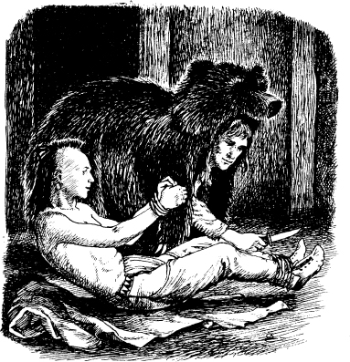

10
Con gấu
Listen to Part 1:
Magua nhìn Duncan và Alice. Hắn cười và tiến lại gần họ. Bỗng nhiên, con gấu xuất hiện trong phòng. Nó nhanh chóng giữ chặt Magua. Magua không thể cử động. Hắn không thể quay lại.
Duncan chạy đến chỗ người Huron. Anh trói tay Magua lại. Sau đó, anh trói chân Magua lại. Magua bắt đầu nói, nhưng Duncan nhét một mảnh vải vào miệng hắn.
Mắt Thần Ưng tháo đầu con gấu ra. 'Chúng ta phải đi nhanh thôi,' ông nói. 'Alice, con sẽ mặc một tấm chăn. Con sẽ là cô gái Huron bị ốm. Sau đó, con có thể rời khỏi làng Huron. '
Mắt Thần Ưng lại đội đầu con gấu lên. Alice trùm một tấm chăn lên đầu. Duncan bế Alice ra khỏi hang. Và Mắt Thần Ưng đi theo Duncan.
Tù trưởng Huron đang ở bên ngoài hang.
Duncan nói: 'Tôi sẽ đưa người phụ nữ bị ốm đi. Tôi sẽ đưa cô ấy đến nhà của ông vào ngày mai. '
Mắt Thần Ưng, Duncan và Alice rời khỏi làng. Sau đó, Mắt Thần Ưng dẫn Duncan và Alice đến một con đường mòn.
Mắt Thần Ưng nói với họ: 'Con đường này dẫn đến một con sông nhỏ. Các con sẽ nhìn thấy một ngọn đồi. Ngôi làng của người Delaware ở gần ngọn đồi. Các con sẽ được an toàn khi ở cùng người Delaware. '
Duncan hỏi: 'Ông sẽ làm gì? '
Mắt Thần Ưng nói: 'Tôi phải quay lại để tìm Uncas. '
Listen to Part 2:

Làng Huron tối đen. Người Huron đang trong nhà. Họ ngủ say. Mắt Thần Ưng đang tìm Uncas. Người trinh sát đang mặc trên mình bộ da gấu. Ông xem xét kỹ tất cả các tòa nhà. Sau đó, ông nhìn thấy hai người đàn ông đứng ngoài một ngôi nhà. Họ là lính canh. Nhưng họ đã ngủ thiếp đi. Mắt Thần Ưng lặng lẽ đi vào nhà.
Uncas đang nằm trên sàn. Tay và chân anh bị trói bằng dây. Mắt Thần Ưng cởi đầu con gấu ra. Uncas mỉm cười.
Anh ấy khẽ nói: 'Mắt Thần Ưng. '

Mắt Thần Ưng cởi trói tay chân của Uncas. Sau đó, ông cởi bộ đồ lông gấu ra. Uncas và Mắt Thần Ưng nhanh chóng chạy ra khỏi làng.
Mắt Thần Ưng nói: 'Chúng ta sẽ đến làng của người Delaware'.
Uncas nói: 'Được! Người Delaware là con cháu của ông tôi. Họ sẽ giúp chúng ta.'
Sáng hôm sau, người Huron đi tìm Uncas. Họ sẽ giết anh ấy. Họ phát hiện ra bộ da gấu. Nhưng họ không tìm thấy chàng trai Mohican.
Listen to Part 3:
Sau đó, họ đến hang động. Họ thấy một người phụ nữ đã chết. Nhưng họ không tìm thấy Alice.
Họ tìm thấy Magua. Tay và chân hắn bị trói. Miệng hắn bị nhét một tấm vải.
Người Huron cởi trói chân tay cho Magua. Họ lấy mảnh vải ra khỏi miệng hắn.
Magua rất tức giận. Hắn hét lên: 'Giết tù nhân Mohican ngay! '
Một trong những tù trưởng nói: 'Hắn đã đi rồi. '
Magua hét lên trong tức giận. Và hắn chạy ra khỏi hang.
Mục lục
- Trang bìa
- Tên sách
- Mục lục
- Tóm tắt về tác giả
- Tóm tắt câu chuyện
- Các nhân vật trong truyện
- 1 Hai chị em
- 2 Lạc trong rừng
- 3 Trận đánh tại thác Glenn
- 4 "Ta là tù trưởng Huron
- 5 Pháo đài William Henry
- 6 "Bao giờ viện quân mới tới
- 7 Đường mòn
- 8 Thầy phù thủy
- 9 Trong ngôi làng Huron
- 10 Con gấu
- 11 Vị tù trưởng già
- 12 Người Mohican cuối cùng
- Bản quyền